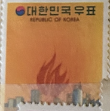
| SOURCE | TITLE| IMAGE MATCH | click to source page |
| Getty Images | South Korean conservative activists burn a North Korean flag and... News Photo - Getty Images | |
| Fandom | Bodo | Logopedia | Fandom | 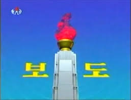 |
| eBay | O) 1975 KOREA, ART WORK, COMMEMORATION OF THE LIBERATION OF KOREA, FIREWORKS, NA | eBay | 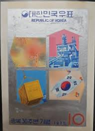 |
| Australian Broadcasting Corporation | Why is there so much tension on the Korean peninsula? - ABC listen | 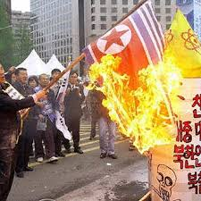 |
| YouTube | 朝鮮人民軍歌 / 조선인민군가 - YouTube | 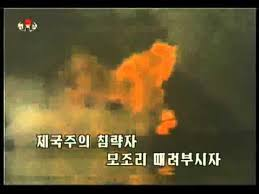 |
| Amazon.com | Amazon.com: Your Republic Is Calling You: 9780151015450: Kim, Young-ha, Kim, Chi-Young: Books | 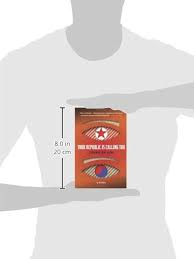 |
| Archive | Historical dictionary of the Republic of Korea : Nahm, Andrew C : Free Download, Borrow, and Streaming : Internet Archive | 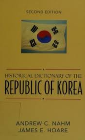 |
| eBay | 88 Chinese SEOUL Magazine pictorial of Korea Illustrated with Olympic 韓國畫報 秋 奧運會 | eBay | 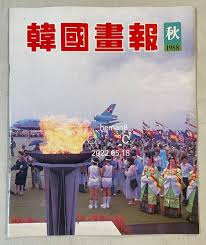 |
| North Korea Tech | More on KCTV's new-look news | 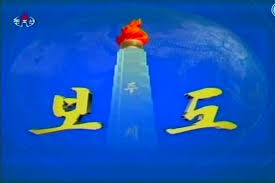 |
| Cherrystone Auctions | Rare Stamps & Postal History of the World - July 11-12, 2023 - LARGE LOTS AND COLLECTIONS KOREA | 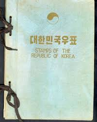 |
| NK News | Why Russia won't call the Hwasong-14 an ICBM | NK News | 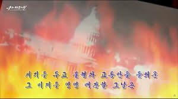 |
| eBay | Maybe I'll Catch Fire by Alkaline Trio BLACK CENTER LABEL RARE VINYL MORDAM 612851005518| eBay | 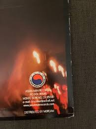 |
| Amazon.in | Dead Lamb is not Afraid of Fire: A Coup Against Destiny eBook : Tare, Tushar: Amazon.in: Kindle Store | 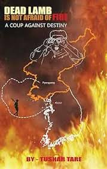 |
| Alamy | A South Korean protester holds a burning Japanese flag during an anti-Japan rally near the Japanese Embassy in Seoul Monday, April 11, 2005. The South Korean civic groups, angered by what they | 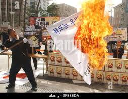 |
| The Globe and Mail | North Korea's 'Big Lie' era may be over as it admits to fiery rocket failure - The Globe and Mail | |
| AbeBooks | Korea the Third Republic by Kyung Cho Chung: VG / VG HARDCOVER (1971) | Early Republic Books | 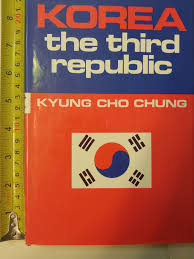 |
| Amazon.com | Amazon.com: Andrew C. Nahm: books, biography, latest update | 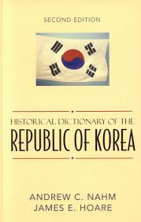 |
| Sky | North Korea Video Shows Obama In Flames | World News | Sky News | 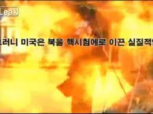 |
| TIL: North Korea used the Oblivion title theme in one of there propaganda videos : r/gaming | 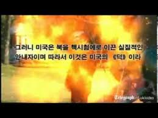 | |
| How is this legal to sell? : r/legal | 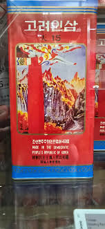 | |
| eBay Australia | taedonggangart on eBay | 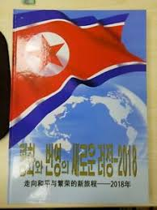 |
| Archive | Historical dictionary of the Democratic People's Republic of Korea : Hoare, James : Free Download, Borrow, and Streaming : Internet Archive | 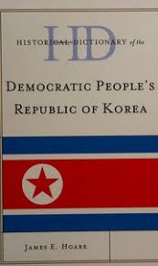 |
| YouTube | Korean Central Television - News Theme (2011-2013) - YouTube | 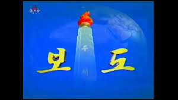 |
| eBay | Korea the Third Republic Kyung Cho Chung 1st Print 1971 HBDJ | eBay | 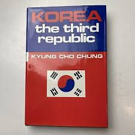 |
| 미숙 (parkbb170) – Profile | Pinterest | 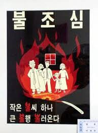 | |
| Target | New Challenges of North Korean Foreign Policy - by K Park (Hardcover) : Target | 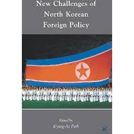 |
| alternatehistory.com | Flag Thread II | Page 270 | alternatehistory.com | 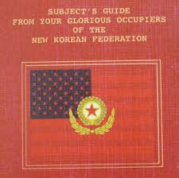 |
| eBay UK | Korean Science & Technology Postal Stamps for sale | eBay UK | 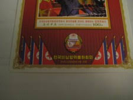 |
| eBay | New Korea: New Land of the Morning Calm by Kyung Cho Chung -Hardcover 1962 1st P | eBay | 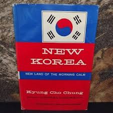 |
| Flickr | Skimp In | Flickr | 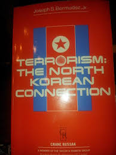 |
| DeviantArt | North Korea Tourism Slogan by kyuzoaoi on DeviantArt | 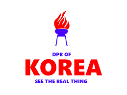 |
| Propagandaworld | Book Korea General National Symbols Of The DPRK 2019 | Propagandaworld | 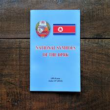 |
| AbeBooks | Forging a New Era - The Fifth Republic of Korea: Fine Hard Cover (1981) First Edition. | Transformer | 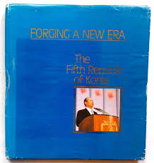 |
| eBay | Fire & Movement #90 | eBay | 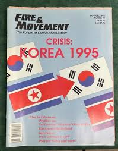 |
| Barista - Are you looking for the perfect coffee? ...I found it 😂😂😂😂 | فېسبوک | 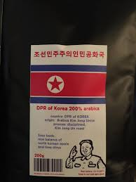 | |
| Noble Knight Games | 90 "Crisis - Korea 1995, Smithereens, Napoleon's First Battles" - Fire & Movement - Decision Games - Noble Knight Games | 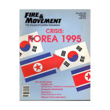 |
| Goodreads | Books by Byron Bales (Author of The Family Business) | 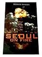 |
| europa.eu | Council of the European Union - PRADO - PRK-AD-02001 | 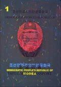 |
| WordPress.com | Stamp Book North Korea | Propagandaworld Archive | 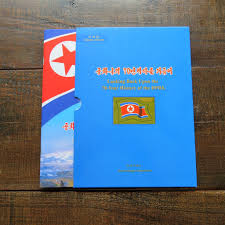 |
| Australian Broadcasting Corporation | North Korea video shows Obama in flames - ABC News | 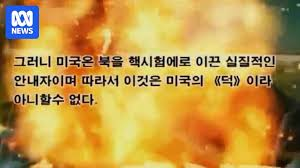 |
| My grandfather's South Korean diplomatic passports issued from 1962 to 1989 : r/PassportPorn | 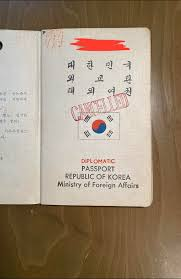 | |
| seakbooks.com | Your Republic Is Calling You”: A Gripping Exploration of Identity, Loyalty, and the Past – SEAK Strategic | 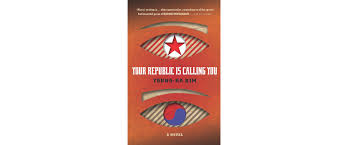 |
| AbeBooks | Shop KOREA Collections: Art & Collectibles | AbeBooks: Transformer | 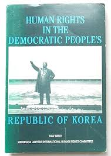 |
| Pedro's general reenacting, impressions and living history page (@pedroreenacting) • Facebook | 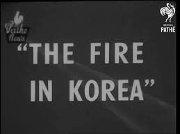 | |
| TikTok | कोरियामा E9 र E7 भिसा प्रक्रिया र चुनौतीहरू | TikTok | 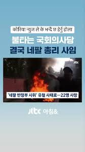 |
| 나무위키 | home front - NamuWiki | 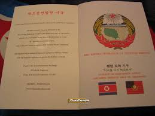 |
| eBay | 1973 Korea Seoul Central First Day Issue Cover Fire Prevention Day Stamp | eBay | 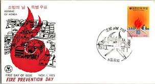 |
| 1993 first flight Geneve-Niamey FDC （首航实寄封） one for Rm 15 only one | 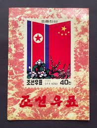 | |
| PICRYL | DPRK E-Passport Info Page under black light - PICRYL - Public Domain Media Search Engine Public Domain Search | 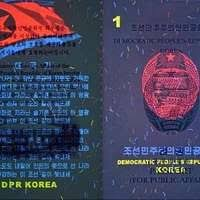 |
| Carousell | 100+ Korea stamps For Sale | Memorabilia & Collectibles | Carousell Singapore | 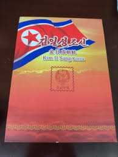 |
| Interested in a list of all decent/good submods : r/TheFireRisesMod | 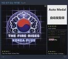 | |
| WordPress.com | Magazines North Korea | Propagandaworld Archive | |
| Alamy | North Korean postage stamp from 2006 commemorating the 60th anniversary of the Korean Children's Union, featuring a red necktie and torch Stock Photo - Alamy | |
| David Rumsey Map Collection | Browse All : Images by Státní zeměměřický a kartografický ústav - David Rumsey Historical Map Collection | |
| Amazon.com | 懸賞日記 in KOREA〈第2巻〉: 9784820397236: Nasubi: Books - Amazon.com | |
| North Korean COVID-19 posters with translations - 2022 : r/PropagandaPosters | ||
| QRZ.com | OK1GF - Callsign Lookup by QRZ Ham Radio | |
| europa.eu | Council of the European Union - PRADO - PRK-AS-02002 | |
| Amazon.com | Amazon.com: Harold Hakwon Sunoo: books, biography, latest update | |
| YouTube | North Korea Releases New Video Showing President Obama and U.S. Soldiers Engulfed in Flames - YouTube |